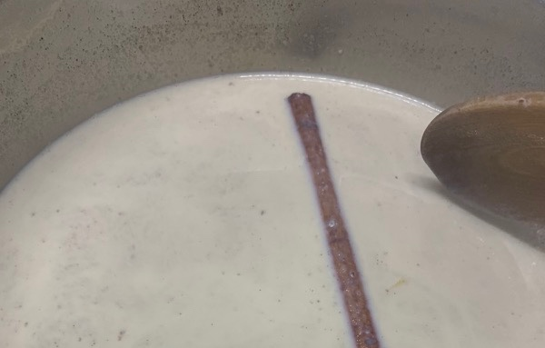
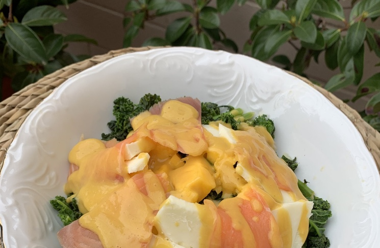
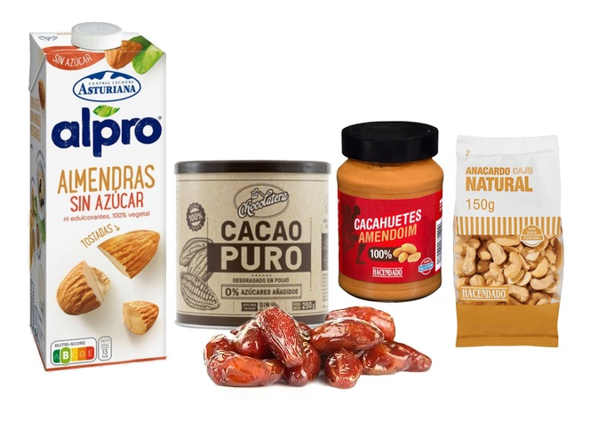

<?xml version="1.0" encoding="UTF-8"?><rss version="2.0"
	xmlns:content="http://purl.org/rss/1.0/modules/content/"
	xmlns:wfw="http://wellformedweb.org/CommentAPI/"
	xmlns:dc="http://purl.org/dc/elements/1.1/"
	xmlns:atom="http://www.w3.org/2005/Atom"
	xmlns:sy="http://purl.org/rss/1.0/modules/syndication/"
	xmlns:slash="http://purl.org/rss/1.0/modules/slash/"
	>

<channel>
	<title>RecetaFácil &#8211; Nutricionista en Málaga. Nutricionista Madrid</title>
	<atom:link href="https://nutrifacil.es/category/recetas-sanas/feed/" rel="self" type="application/rss+xml" />
	<link>https://nutrifacil.es</link>
	<description>Nutricionista personalizado en Málaga y Madrid... Porque la salud se contagia.</description>
	<lastBuildDate>Wed, 31 Mar 2021 08:58:25 +0000</lastBuildDate>
	<language>es</language>
	<sy:updatePeriod>
	hourly	</sy:updatePeriod>
	<sy:updateFrequency>
	1	</sy:updateFrequency>
	<generator>https://wordpress.org/?v=5.7</generator>

<image>
	<url>https://nutrifacil.es/wp-content/uploads/2020/09/cropped-favicon-nutrifacil-1-32x32.png</url>
	<title>RecetaFácil &#8211; Nutricionista en Málaga. Nutricionista Madrid</title>
	<link>https://nutrifacil.es</link>
	<width>32</width>
	<height>32</height>
</image> 
	<item>
		<title>Albóndigas de pollo con salsa de calabaza, manzana y piña</title>
		<link>https://nutrifacil.es/albondigas-de-pollo-con-salsa-de-calabaza-manzana-y-pina/</link>
		
		<dc:creator><![CDATA[Nutrifacil]]></dc:creator>
		<pubDate>Thu, 01 Apr 2021 10:00:10 +0000</pubDate>
				<category><![CDATA[RecetaFácil]]></category>
		<guid isPermaLink="false">https://nutrifacil.es/?p=6656</guid>

					<description><![CDATA[<p>Hoy traemos esta receta de albóndigas de pollo preparadas con una salsa de calabaza, manzana y piña con cúrcuma. Una salsa algo diferente a lo que estamos acostumbrados en la que el sabor dulce de la calabaza y la manzana se verá potenciado con el ácido de la piña. Además, nos aportará una buena cantidad [&#8230;]</p>
<p>La entrada <a rel="nofollow" href="../../../albondigas-de-pollo-con-salsa-de-calabaza-manzana-y-pina.html">Albóndigas de pollo con salsa de calabaza, manzana y piña</a> se publicó primero en <a rel="nofollow" href="../../../nutrifacil_default_3.html">Nutricionista en Málaga. Nutricionista Madrid</a>.</p>
]]></description>
										<content:encoded><![CDATA[
<p>Hoy traemos esta receta de albóndigas de pollo preparadas con una salsa de calabaza, manzana y piña con cúrcuma. Una salsa algo diferente a lo que estamos acostumbrados en la que el sabor dulce de la calabaza y la manzana se verá potenciado con el ácido de la piña. Además, nos aportará una buena cantidad de nutrientes, fibra y proteína a nuestra dieta.</p>


<p><strong></strong>   Tiempo de preparación: 1 hora 30 minutos aproximadamente. Sin contar los tiempos de reposo.</p>


<h2>Ingredientes para preparar las albóndigas de pollo</h2>


<ul class="ml-4"><li>500g carne de muslo de pollo picada.</li><li>20ml vino blanco.</li><li>5u huevos.</li><li>100g pan rallado integral 100%. (ideal dejar pan duro una semana y moler)</li><li>1 diente de ajo.</li><li>Especias: Pimienta en grano molina y azafrán.</li></ul>


<h2><br>Ingredientes para la salsa de calabaza, manzana y piña</h2>


<ul class="ml-5"><li>150g calabaza.</li><li>50g puerro.</li><li>150g manzana roja.</li><li>4 rodajas de piña en su jugo u 80g piña al natural.</li><li>40ml aceite de oliva virgen extra.</li><li>100ml leche semidesnatada.</li><li>200ml de agua tibia.</li><li>Cúrcuma al gusto.</li></ul>


<h2>Preparación de la masa de las albóndigas de pollo</h2>


<p><br>Mezcla la carne de pollo con los huevos, añade las especias machacadas con el ajo y disueltas en el vino blanco. Cuando esté todo bien mezclado incorpora el pan rallado y vuelve a mezclar hasta conseguir una masa homogénea.</p>


<p>Deja reposar la masa de las albóndigas en un cuenco o plato dentro de la nevera unas 12 horas.</p>


<p>Transcurrido este tiempo, forma con la masa bolitas del tamaño de una cuchara.</p>


<p>Prepara una olla con agua y ponla a hervir. Cuando el agua esté burbujeando echa las bolitas, deberán cocer durante unos 10 minutos. Transcurrido este tiempo sácalas y deja escurrir en un plato.</p>


<p>Precalienta el horno a 200ºC e introduce las albóndigas unos 20 minutos por sus diferentes caras. Con ello conseguiremos dorar nuestras albóndigas sin necesidad de freír al mismo tiempo que potenciaremos su sabor.</p>


<div class="wp-block-image"><figure class="aligncenter size-full"></figure></div>


<h2>Preparación de la salsa de calabaza, manzana y piña</h2>


<p><br>Para preparar la salsa es importante cortar todos los ingredientes pequeños y saltearlos sin que lleguen a dorarse en exceso, el último ingrediente a añadir es el puerro para evitar que se queme.</p>


<p>Cuando toda la verdura esté ponchada y blanda, tritura todo y añade 100ml de leche semidesnatada y 200ml agua tibia. Vuelve a triturar Hasta conseguir una textura fina, sin grumos.</p>


<p>Añadir una pizca de cúrcuma al gusto.</p>


<p>Finalmente, saca las albóndigas del horno que ya estarán doradas e introdúcelas en la salsa.<br>Podemos añadir sal al gusto siempre moderando su dosis para evitar excesos de sodio.</p>


<div class="wp-block-group has-background" style="background-color:#faf0db"><div class="wp-block-group__inner-container">
<p><strong><span class="has-inline-color has-luminous-vivid-orange-color">TRUCOS Y CONSEJOS</span></strong></p>


<ul><li>Dejar reposar unas horas para que las albondigas tomen sabor de la salsa.</li><li>Calentar y servir.Al hornear evitaremos tener que freír las albóndigas y todo el exceso de aceite que ello conlleva así como evitaremos esos radicales libres tan perjudiciales para la salud que se forman tras calentar repetidamente el aceite que se suele utilizar para freír.</li></ul>
</div></div>


<div class="wp-block-group has-background" style="background-color:#faf0db"><div class="wp-block-group__inner-container">
<p><strong>Esperamos que disfrutéis de esta receta y recordad hacednos llegar vuestra versión de la misma a través de nuestra cuenta de Instagram con él hashtag:</strong></p>


<p class="has-text-align-center"><strong><span class="has-inline-color has-luminous-vivid-orange-color">#recetafácil</span></strong><span class="has-inline-color has-luminous-vivid-orange-color"> <strong>#recetanutrifácil</strong><strong>#AlbondigasNutrifacil</strong></span></p>
</div></div>
<p>La entrada <a rel="nofollow" href="../../../albondigas-de-pollo-con-salsa-de-calabaza-manzana-y-pina.html">Albóndigas de pollo con salsa de calabaza, manzana y piña</a> se publicó primero en <a rel="nofollow" href="../../../nutrifacil_default_3.html">Nutricionista en Málaga. Nutricionista Madrid</a>.</p>
]]></content:encoded>
					
		
		
			</item>
		<item>
		<title>Receta de torrijas saludables y fáciles de hacer</title>
		<link>https://nutrifacil.es/receta-de-torrijas-saludables-y-faciles-de-hacer/</link>
		
		<dc:creator><![CDATA[Silvia Nutricionista]]></dc:creator>
		<pubDate>Thu, 25 Mar 2021 10:00:19 +0000</pubDate>
				<category><![CDATA[RecetaFácil]]></category>
		<guid isPermaLink="false">https://nutrifacil.es/?p=7631</guid>

					<description><![CDATA[<p>Las torrijas es un dulce típico de Semana Santa que solemos asociar con un alto valor calórico. Esto es debido principalmente a la forma tradicional de preparar las torrijas. En nuestro caso haremos algunas variaciones al respecto para que podáis disfrutar de unas torrijas más saludables, nutritivas y fácil de hacer. Tiempo de preparación: 15 [&#8230;]</p>
<p>La entrada <a rel="nofollow" href="../../../receta-de-torrijas-saludables-y-faciles-de-hacer.html">Receta de torrijas saludables y fáciles de hacer</a> se publicó primero en <a rel="nofollow" href="../../../nutrifacil_default_3.html">Nutricionista en Málaga. Nutricionista Madrid</a>.</p>
]]></description>
										<content:encoded><![CDATA[
<p>Las torrijas es <a href="https://www.directoalpaladar.com/cultura-gastronomica/conoces-la-historia-de-la-torrija" target="_blank" rel="noreferrer noopener" class="text-decoration-none">un dulce típico de Semana Santa</a> que solemos asociar con un alto valor calórico. Esto es debido principalmente a la forma tradicional de preparar las torrijas. En nuestro caso haremos algunas variaciones al respecto para que podáis disfrutar de unas torrijas más saludables, nutritivas y fácil de hacer.</p>


<p>   Tiempo de preparación: 15 minutos de preparación + 12 horas de reposo. (ideal planificar la noche antes de su elaboración final).</p>


<div class="wp-block-group py-3"><div class="wp-block-group__inner-container">
<h2><strong>Ingredientes para las torrijas saludables:</strong></h2>


<ul class="m-3"><li>Barra de pan 100% integral 250g</li><li>Leche semidesnatada 1L</li><li>Canela en rama </li><li>Piel de limón 10g (importante sin parte blanca)</li><li>Piel de naranja 10g (importante sin parte blanca)</li><li>Pasta de dátil 100% 60g </li><li>Canela Ceylán en polvo </li><li>2 huevos tamaño L 160g</li><li>Aceite de oliva virgen extra 20ml</li></ul>
</div></div>


<h2><strong>Pasos para la preparación de las torrijas: </strong></h2>


<p>En un cazo, calentamos a fuego medio la leche junto con la rama de canela, la pasta de dátil y la piel del limón y la naranja. Es importante que al quitar la piel del limón y la naranja no cojamos la parte blanca de la cáscara ya que daría sabor amargo al plato. Lo que necesitamos de la piel de los cítricos son sus aceites aromáticos presentes en ésta.</p>


<p>Llevamos a ebullición unos minutos. </p>


<p>Colamos la leche separando la canela, la piel del limón y de la naranja sin machacarla para evitar que la leche sepa amarga. Dejamos reposar hasta que se atempere.</p>


<div class="wp-block-image"><figure class="aligncenter size-large"><figcaption>En un bol o cuenco dejaremos que la leche se enfríe un poca antes de utilizar.</figcaption></figure></div>


<h3>Cortamos la barra de pan en rebanadas para las torrijas</h3>


<p>Las rebanadas han de tener aproximadamente 2cm de grosor. En la imagen de abajo se muestra cómo deben quedar las rebanadas de pan integral que utilizaremos para elaborar nuestras torrijas saludables.</p>


<div class="wp-block-image m-3"><figure class="aligncenter size-large is-resized"></figure></div>


<h3>Empapamos en leche el pan integral cortado para torrijas</h3>


<p>Colocamos las rebanadas de pan en una bandeja rectangular unas seguidas de otras y añadimos la leche atemperada. </p>


<p>Dejaremos reposar en la nevera de 4 a 12 horas o hasta que absorba el pan la leche. Si dejamos que el pan esté de un día para otro el resultado será mejor.</p>


<div class="wp-block-image m-3"><figure class="aligncenter size-full is-resized"><figcaption>Pan de torrijas ya cortado y preparado para añadir la leche previamente preparada.</figcaption></figure></div>


<h3>Pasar por huevo batido nuestras torrijas saludables</h3>


<p>Una vez está el pan integral empapado en leche, añadimos canela en polvo al gusto y lo rebozamos con huevo batido.</p>


<div class="wp-block-image m-3"><figure class="aligncenter size-large is-resized"><figcaption>Pasamos por huevo batido las torrijas mojadas en leche.</figcaption></figure></div>


<h3>Doramos en una sartén las torrijas de pan integral</h3>


<p>En una sartén antiadherente, echaremos unas gotas de aceite de oliva virgen extra y pondremos cada cara de la rebanada de pan integral 2 minutos a fuego medio-alto con tapadera. </p>


<p>Una vez estén doradas nuestras torrijas por ambas caras sácalas de la sartén y sírvelas en un plato.</p>


<div class="wp-block-image"><figure class="aligncenter size-large is-resized"></figure></div>


<p>Pueden consumirse calientes o atemperadas. Calientes estarán más jugosas y blanditas. Una vez que pierden la temperatura están algo más compactas pero igual de jugosas y gustosas.</p>


<div class="wp-block-group p-3 border border-danger"><div class="wp-block-group__inner-container">
<h2><i class="text-danger fa fa-heartbeat"></i> Información nutricional de nuestras torrijas saludables</h2>


<p>Con esta receta salen unas 12 torrijas de pan integral para 4 personas (3 torrijas por persona).</p>


<ul><li>Al utilizar la pasta de dátil (en vez de azúcar común) estaremos disminuyendo en gran medida el índice glucémico de esta receta en cuanto a azúcares simples.</li><li>El pan integral aportará fibra, vitaminas del grupo B y minerales a nuestra dieta. Cuando el pan es blanco es procedente de harina de trigo refinada por lo que pierde estas propiedades. Puedes consultar el <a href="../../../comparativa-nutricional-de-la-espelta-vs-trigo-blanco/comparativa-nutricional-de-la-espelta-vs-trigo-blanco.html">post en el que comparamos el trigo con la espelta aquí</a>.</li><li>Al dorarlas en una sartén con unas gotas de aceite evitaremos ese exceso de aceite que suelen tener las típicas torrijas que se fríen en abundante aceite. Nuestras torrijas se notarán menos pesadas en la digestión debido a esto. Por otra parte, al tener menos aceite serán menos calóricas que las de una receta tradicional. </li></ul>
</div></div>
<p>La entrada <a rel="nofollow" href="../../../receta-de-torrijas-saludables-y-faciles-de-hacer.html">Receta de torrijas saludables y fáciles de hacer</a> se publicó primero en <a rel="nofollow" href="../../../nutrifacil_default_3.html">Nutricionista en Málaga. Nutricionista Madrid</a>.</p>
]]></content:encoded>
					
		
		
			</item>
		<item>
		<title>Ensalada de kale con salmón, vinagreta de mango y queso de oveja</title>
		<link>https://nutrifacil.es/ensalada-de-kale-con-salmon-vinagreta-de-mango-y-queso-de-oveja/</link>
		
		<dc:creator><![CDATA[Nutrifacil]]></dc:creator>
		<pubDate>Thu, 18 Mar 2021 10:00:15 +0000</pubDate>
				<category><![CDATA[RecetaFácil]]></category>
		<guid isPermaLink="false">https://nutrifacil.es/?p=7289</guid>

					<description><![CDATA[<p>En esta ocasión os traemos una ensalada templada de kale con salmón ahumado y queso tierno de oveja aderezada con una vinagreta de mango que no os dejará indiferentes. Con unos beneficios nutricionales muy interesantes. Qué es el Kale El kale es un tipo de col verde rizada, similar al brócoli o a las coles [&#8230;]</p>
<p>La entrada <a rel="nofollow" href="../../../ensalada-de-kale-con-salmon-vinagreta-de-mango-y-queso-de-oveja/ensalada-de-kale-con-salmon-vinagreta-de-mango-y-queso-de-oveja.html">Ensalada de kale con salmón, vinagreta de mango y queso de oveja</a> se publicó primero en <a rel="nofollow" href="../../../nutrifacil_default_3.html">Nutricionista en Málaga. Nutricionista Madrid</a>.</p>
]]></description>
										<content:encoded><![CDATA[
<p>En esta ocasión os traemos una <strong>ensalada templada de kale con salmón ahumado y queso tierno de oveja</strong> aderezada con una <strong>vinagreta de mango</strong> que no os dejará indiferentes. Con unos beneficios nutricionales muy interesantes.</p>


<h2>Qué es el Kale</h2>


<p><a href="https://www.webconsultas.com/curiosidades/kale-un-super-alimento-muy-nutritivo-y-bajo-en-calorias" target="_blank" rel="noreferrer noopener nofollow">El kale es un tipo de col verde rizada</a>, similar al brócoli o a las coles de Bruselas. Su consumo, además de una <strong>buena fuente de fibra</strong>, nos aportará grandes <strong>beneficios nutricionales y un bajo aporte calórico</strong>.</p>


<p>Es una importante fuente de calcio, hierro, vitamina C y K así como de betacarotenos (precursor de vitamina A). [<a href="feed.html#informacion-kale">Leer más información al final de la receta <i class="fa fa-info-circle"></i></a> ]</p>


<div class="wp-block-image py-5"><figure class="aligncenter size-large is-resized"><figcaption>Hojas de <strong>Kale</strong>. Variedad de <strong>col rizada con grandes propiedades nutricionales</strong>.</figcaption></figure></div>


<p>   Tiempo de preparación: 10 minutos aproximadamente.</p>


<h2>Ingredientes para elaborar la ensalada</h2>


<p></p>


<ul class="mx-3"><li>250g de kale. (el contenido de una bolsa de kale de las que encontraremos en los supermercados)</li><li>50g de salmón ahumado.</li><li>50g de queso tierno de oveja.</li><li>50g de mango en dados.</li></ul>


<h2>Ingredientes para la vinagreta de mango</h2>


<p></p>


<ul class="mx-3"><li>50g de mango.</li><li>2 cucharadas de aceite oliva virgen extra (AOVE).</li><li>1 cucharada de vinagre.</li><li>1 cucharadita pequeña de salsa de soja sin azúcar (<a href="https://www.kikkoman.es/productos/salsa-de-soja-naturalmente-fermentada/" target="_blank" rel="noreferrer noopener" class="text-decoration-none">kikkoman</a>).</li></ul>


<p>Para preparar la vinagreta introduce todos los ingredientes de la lista en un cuenco o vaso y tritura durante unos segundos con la batidora. Si lo prefieres también puedes hacerlo con un tenedor, intenta que quede lo más homogéneo posible y con una textura suave.</p>


<h2>Preparación del kale para la ensalada templada</h2>


<p></p>


<p>En una sartén con 200g de agua (un vaso aproximadamente) hierve durante unos minutos el kale. Sabrás que está en su punto cuando lo notes verde brillante y los tallos estén algo tiernos.</p>


<p>A continuación, añade el kale ya cocinado a un bol. Incorpora el queso de oveja y las lonchas de salmón a modo de topping.</p>


<p>Por último, añade la vinagreta de mango previamente preparada y los dados de mango.</p>


<div class="wp-block-image pt-5"><figure class="aligncenter size-full is-resized"><figcaption>Ensalada de kale con vinagreta de mango y queso de oveja.</figcaption></figure></div>


<div style="height:100px" aria-hidden="true" id="informacion-kale" class="wp-block-spacer"></div>


<div class="wp-block-group p-3 border border-danger"><div class="wp-block-group__inner-container">
<h2><i class="text-danger fa fa-heartbeat"></i> Información nutricional del kale</h2>


<p class="text-justify">Por su <strong>bajo contenido en calorías</strong> es apropiado para consumir con regularidad. Además, su consumo nos aporta unos beneficios nutricionales importantes para la salud:</p>


<ul class="text-justify mx-3"><li>Es una fuente de <strong>vitamina k</strong>. Importante en la coagulación de la sangre. OJO, si estás tomando anticoagulantes como la Warfarina es importante que <a href="../../../contacto.html">consultes a tu nutricionista en caso de duda antes de su consumo</a>.</li><li>Es rica en <strong>vitamina C</strong>. Aporta unas cuatro veces más que otros vegetales como la espinaca.</li><li>Contiene una fuente de <strong>antioxidantes</strong> como el <strong>indo-3-carbinol o el sulforafano</strong>. Ayudando a prevenir la oxidación de los tejidos.</li><li>Aporta una cantidad importante de minerales tales como el <strong>calcio</strong>, <strong>manganeso</strong>, <strong>cobre</strong>, <strong>potasio</strong> y <strong>magnesio</strong>.</li><li>Su aporte de <strong>fibra</strong> ayuda a mejorar el <strong>tránsito intestinal</strong> con lo que previene el estreñimiento.</li></ul>
</div></div>


<p></p>
<p>La entrada <a rel="nofollow" href="../../../ensalada-de-kale-con-salmon-vinagreta-de-mango-y-queso-de-oveja/ensalada-de-kale-con-salmon-vinagreta-de-mango-y-queso-de-oveja.html">Ensalada de kale con salmón, vinagreta de mango y queso de oveja</a> se publicó primero en <a rel="nofollow" href="../../../nutrifacil_default_3.html">Nutricionista en Málaga. Nutricionista Madrid</a>.</p>
]]></content:encoded>
					
		
		
			</item>
		<item>
		<title>Bombones de chocolate con frutos secos</title>
		<link>https://nutrifacil.es/bombones-de-chocolate-con-frutos-secos/</link>
					<comments>https://nutrifacil.es/bombones-de-chocolate-con-frutos-secos/#respond</comments>
		
		<dc:creator><![CDATA[Nutrifacil]]></dc:creator>
		<pubDate>Thu, 07 Jan 2021 18:12:30 +0000</pubDate>
				<category><![CDATA[RecetaFácil]]></category>
		<guid isPermaLink="false">https://nutrifacil.es/?p=6461</guid>

					<description><![CDATA[<p>En una dieta equilibrada no debe faltar nuestro momento de placer. Esta receta de bombones de chocolate con frutos secos será una buen opción para tomar en esos momentos en los que el cuerpo nos pida algo dulce. Ingredientes para preparar los bombones de chocolate con frutos secos. 170g de Chocolate negro 82% Valor. 200g [&#8230;]</p>
<p>La entrada <a rel="nofollow" href="../../../bombones-de-chocolate-con-frutos-secos/bombones-de-chocolate-con-frutos-secos.html">Bombones de chocolate con frutos secos</a> se publicó primero en <a rel="nofollow" href="../../../nutrifacil_default_3.html">Nutricionista en Málaga. Nutricionista Madrid</a>.</p>
]]></description>
										<content:encoded><![CDATA[
<p>En una dieta equilibrada no debe faltar nuestro momento de placer. Esta receta de bombones de chocolate con frutos secos será una buen opción para tomar en esos momentos en los que el cuerpo nos pida algo dulce.</p>


<div class="wp-block-image is-style-default"><figure class="aligncenter size-full"></figure></div>


<h2>Ingredientes para preparar los bombones de chocolate con frutos secos.</h2>


<ul><li>170g de Chocolate negro 82% Valor.</li><li>200g de frutos secos naturales o tostados.</li></ul>


<p>En esta receta hemos optado por una combinación de diferentes frutos secos: pistachos, anacardos y nueces. Puedes utilizar estos mismos o probar con diferentes frutos secos. Elige los que más te gusten.</p>


<p>Ya que estamos seguros que repetirás esta receta en más de una ocasión te recomendamos que experimentes con la gran variedad de frutos secos que se encuentran a nuestro alcance. Prueba a preparar esta receta con los frutos secos al natural y haz esta misma receta tostando los frutos secos. De esta forma disfrutarás de todo su sabor.</p>


<p>Al estar preparado con chocolate negro, con bajo contenido en azúcares, mantendremos a raya nuestro índice glucémico. La combinación del chocolate con los frutos secos nos aportará unos nutrientes tan importantes en nuestra dieta como son el hierro, magnesio y fósforo. Algo que nuestro cuerpo agradecerá a nivel muscular.</p>


<h2>Pasos para la elaboración de los bombones de chocolate con frutos secos</h2>


<p>Esta receta se elabora muy fácilmente y no necesita mucho tiempo. Tan solo necesitaremos tener cuidado en el primer paso que es crucial para que nuestro plato salga perfecto.</p>


<h3>Primer paso, derretir el chocolate en el microondas.</h3>


<p>Aunque es un paso sencillo debemos tener en consideración la delicadeza del chocolate. Con temperatura elevada el chocolate se quema. Es algo que quizás a muchos os haya pasado en alguna ocasión y quizás ya sabéis cómo solventarlo.</p>


<ul><li>Para los que tenéis dudas de cómo hacerlo sin que se os queme aquí tenéis el procedimiento correcto:</li><li>Coloca el chocolate en trozos dentro de un bol o cuenco.</li><li>Introduce el bol en el microondas.</li><li>Calienta unos 15 a 20 segundos y remueve con una cuchara para ir comprobando el estado.</li><li>Vuelve a calentar durante otros 15-20 segundos y remueve de nuevo. Toca el bol con la mano, tiene que estar caliente pero no quemar.</li><li>Cuando ya esté casi todo derretido tendrás que tener mayor cuidado. Si es necesario calienta durante menos segundos.</li></ul>


<figure class="wp-block-gallery columns-3 is-cropped"><ul class="blocks-gallery-grid"><li class="blocks-gallery-item"><figure><figcaption class="blocks-gallery-item__caption">Coloca en el microondas</figcaption></figure></li><li class="blocks-gallery-item"><figure><figcaption class="blocks-gallery-item__caption">Empezando a derretirse</figcaption></figure></li><li class="blocks-gallery-item"><figure><figcaption class="blocks-gallery-item__caption">Chocolate derretido</figcaption></figure></li></ul></figure>


<h3>Segundo paso, cubrir los frutos secos con chocolate.</h3>


<p>Hay varias formas de hacer esto pero una de las mejores será introducir los frutos secos en el chocolate e ir sacándolos con un tenedor dejando escurrir el exceso de chocolate. De esta manera se formará una capa de chocolate alrededor de todo el fruto seco y nos quedará crujiente una vez enfriado.</p>


<figure class="wp-block-gallery columns-2 is-cropped"><ul class="blocks-gallery-grid"><li class="blocks-gallery-item"><figure><figcaption class="blocks-gallery-item__caption">Nueces</figcaption></figure></li><li class="blocks-gallery-item"><figure><figcaption class="blocks-gallery-item__caption">Nueces con chocolate</figcaption></figure></li><li class="blocks-gallery-item"><figure><figcaption class="blocks-gallery-item__caption">Pistachos</figcaption></figure></li><li class="blocks-gallery-item"><figure><figcaption class="blocks-gallery-item__caption">Pistachos con chocolate</figcaption></figure></li></ul></figure>


<h3>Tercer paso, coloca los frutos secos con chocolate sobre un papel vegetal</h3>


<p>Cuando hayamos escurrido el exceso de chocolate pasaremos a dejar enfriar sobre un papel vegetal. Si no disponéis de papel vegetal podéis utilizar papel de aluminio.</p>


<p>Coloca los frutos secos cubiertos de chocolate sobre el papel ayudándote con un tenedor.</p>


<figure class="wp-block-gallery columns-2 is-cropped"><ul class="blocks-gallery-grid"><li class="blocks-gallery-item"><figure></figure></li><li class="blocks-gallery-item"><figure></figure></li></ul></figure>


<p>Introduce en la nevera los bombones de chocolate sobre el papel vegetal y deja reposar un par de horas hasta que el chocolate se haya enfriado por completo y se endurezca.</p>


<p>Puedes guardarlos en una bolsa tipo zip para guardar alimentos o en un tarro de cristal. Serán las golosinas perfectas para tomar con moderación en momentos puntuales.</p>


<p>Si lo deseas puedes espolvorear con cacao puro 100% en polvo.</p>


<figure class="wp-block-image size-large"></figure>


<p>Disfruta de esta receta como nosotros hemos disfrutado realizándola para ti. Recuerda que puedes encontrar esta y otras recetas fáciles de preparar en nuestro apartado de <a href="../recetas-sanas.html">RecetaFácil de Nutrifácil</a>.</p>
<p>La entrada <a rel="nofollow" href="../../../bombones-de-chocolate-con-frutos-secos/bombones-de-chocolate-con-frutos-secos.html">Bombones de chocolate con frutos secos</a> se publicó primero en <a rel="nofollow" href="../../../nutrifacil_default_3.html">Nutricionista en Málaga. Nutricionista Madrid</a>.</p>
]]></content:encoded>
					
					<wfw:commentRss>https://nutrifacil.es/bombones-de-chocolate-con-frutos-secos/feed/</wfw:commentRss>
			<slash:comments>0</slash:comments>
		
		
			</item>
		<item>
		<title>Menú de Navidad saludable</title>
		<link>https://nutrifacil.es/menu-de-navidad-saludable-2020/</link>
		
		<dc:creator><![CDATA[Nutrifacil]]></dc:creator>
		<pubDate>Wed, 30 Dec 2020 16:55:00 +0000</pubDate>
				<category><![CDATA[RecetaFácil]]></category>
		<guid isPermaLink="false">https://nutrifacil.es/?p=6368</guid>

					<description><![CDATA[<p>Con nuestra propuesta de menú FÁCIL Y SALUDABLE para esta Navidad tan peculiar, esperamos que disfrutes tanto o más que nunca sobre estas fechas. Tostadas de wasa original o con sésamo con mermelada de tomate casera con feta y anchoas del cantábrico y/o tostadas de wasa original o con sésamo con kéfir untado (Carrefour. Marca [&#8230;]</p>
<p>La entrada <a rel="nofollow" href="../../../menu-de-navidad-saludable-2020/menu-de-navidad-saludable-2020.html">Menú de Navidad saludable</a> se publicó primero en <a rel="nofollow" href="../../../nutrifacil_default_3.html">Nutricionista en Málaga. Nutricionista Madrid</a>.</p>
]]></description>
										<content:encoded><![CDATA[
<p>Con nuestra propuesta de menú FÁCIL Y SALUDABLE para esta Navidad tan peculiar, esperamos que disfrutes tanto o más que nunca sobre estas fechas. </p>


<div class="wp-block-group"><div class="wp-block-group__inner-container">
<h3><strong>Entrantes</strong></h3>


<hr class="wp-block-separator has-text-color has-background has-luminous-vivid-orange-background-color has-luminous-vivid-orange-color is-style-wide"/>
</div></div>


<ol><li>Tostadas de wasa original o con sésamo con mermelada de tomate casera con feta y anchoas del cantábrico y/o tostadas de wasa original o con sésamo con kéfir untado (Carrefour. Marca Quescrem) y salmón ahumado o/y tostadas de wasa original o con sésamo con pimientos rojos asados con ventresca en aceite de oliva.</li><li>Tabla de variedad de quesos curados y blandos con uvas y membrillo.</li><li>Burrata (Carrefour o mercadona) con rúcula, tomates secos, cebolla pochada salteada con piñones y pesto casero.</li><li>Jamón ibérico sin parte blanca en exceso (mejor optar por la parte roja o carne).</li><li>Marisco cocido.</li></ol>


<div class="wp-block-group"><div class="wp-block-group__inner-container">
<h3><strong>Platos principales</strong></h3>


<hr class="wp-block-separator has-text-color has-background has-luminous-vivid-orange-background-color has-luminous-vivid-orange-color is-style-wide"/>
</div></div>


<p><strong>Noche</strong>: Lubina/dorada/salmón al horno con parrillada de verduras (espárragos trigueros, calabaza y setas) con especias al gusto.</p>


<p><strong>Día</strong>: Albóndigas de pollo (carne de pollo, vino blanco, cebolla, ajo, perejil, pan rallado y huevo) con salsa de tomate (tomate triturado o natural salteado con aceite de oliva virgen extra) o estofado de ternera al vino tinto (sofreír la ternera con cebolla y aceite de oliva hasta dorar, añadir vino tinto hasta reducir alcohol, añadir cucharada de harina integral) con patatas gajo horneadas con hiervas provenzales.</p>


<div class="wp-block-group"><div class="wp-block-group__inner-container">
<h3><strong>Postre</strong></h3>


<hr class="wp-block-separator has-text-color has-background has-luminous-vivid-orange-background-color has-luminous-vivid-orange-color is-style-wide"/>
</div></div>


<p>-Bombones caseros de frutos secos tostados o naturales con chocolate 85% (derretir chocolate, bañar los frutos secos y dejar enfriar 24h en la nevera) y natillas de chococaqui (triturar caqui maduro y añadir cucharada de cacao 100%)</p>


<p>-Turrón saludable맊asero맋e chocolate con quinoa hinchada. (<a href="../../../turron-de-chocolate-con-quinoa-hinchada/turron-de-chocolate-con-quinoa-hinchada.html">Enlace a nuestra receta de turrón aquí</a>)</p>


<div class="wp-block-group"><div class="wp-block-group__inner-container">
<h3><strong>Bebidas</strong></h3>


<hr class="wp-block-separator has-text-color has-background has-luminous-vivid-orange-background-color has-luminous-vivid-orange-color is-style-wide"/>
</div></div>


<ul><li>Agua.</li><li>Copa de vino blanco o tinto. (<a href="../../../nuestra-recomendacion-sobre-el-alcohol/nuestra-recomendacion-sobre-el-alcohol.html">Ver nuestra recomendación sobre el alcohol</a>)</li><li>Infusión, agua con gas o <a rel="noreferrer noopener" href="https://www.directoalpaladar.com/cultura-gastronomica/kombucha-todo-que-debes-saber-bebida-fermentada-que-arrasa-todo-mundo" target="_blank">kombucha</a>.</li><li>Copa de sidra</li></ul>


<p></p>
<p>La entrada <a rel="nofollow" href="../../../menu-de-navidad-saludable-2020/menu-de-navidad-saludable-2020.html">Menú de Navidad saludable</a> se publicó primero en <a rel="nofollow" href="../../../nutrifacil_default_3.html">Nutricionista en Málaga. Nutricionista Madrid</a>.</p>
]]></content:encoded>
					
		
		
			</item>
		<item>
		<title>Receta de chocolate a la taza saludable</title>
		<link>https://nutrifacil.es/receta-de-chocolate-a-la-taza-saludable/</link>
		
		<dc:creator><![CDATA[Nutrifacil]]></dc:creator>
		<pubDate>Wed, 30 Dec 2020 16:50:37 +0000</pubDate>
				<category><![CDATA[RecetaFácil]]></category>
		<guid isPermaLink="false">https://nutrifacil.es/?p=6380</guid>

					<description><![CDATA[<p>En esta ocasión os traemos una receta de chocolate a la taza elaborada por nuestros nutricionistas para que disfrutéis de esta bebida caliente al mismo tiempo que cuidáis vuestra nutrición y alimentación. Ingredientes 500ml leche semi o bebida vegetal de almendras sin azúcares añadidos. 40g cacao puro. 50g de anacardos naturales. 35g crema de cacahuete [&#8230;]</p>
<p>La entrada <a rel="nofollow" href="../../../receta-de-chocolate-a-la-taza-saludable/receta-de-chocolate-a-la-taza-saludable.html">Receta de chocolate a la taza saludable</a> se publicó primero en <a rel="nofollow" href="../../../nutrifacil_default_3.html">Nutricionista en Málaga. Nutricionista Madrid</a>.</p>
]]></description>
										<content:encoded><![CDATA[
<p>En esta ocasión os traemos una receta de chocolate a la taza elaborada por <a href="../../../equipo-nutrifacil.html">nuestros nutricionistas</a> para que disfrutéis de esta bebida caliente al mismo tiempo que cuidáis vuestra nutrición y alimentación.</p>


<div class="wp-block-image"><figure class="aligncenter size-large"><figcaption>De izquierda a derecha: Leche de almendras, cacao puro, dátiles, crema de cacahuetes y anacardos.</figcaption></figure></div>


<h2><strong>Ingredientes</strong></h2>


<ul><li>500ml leche semi o bebida vegetal de almendras <mark>sin azúcares añadidos.</mark></li><li>40g cacao puro.</li><li>50g de anacardos naturales.</li><li>35g crema de cacahuete 100%.</li><li>6u dátiles 100%. <mark>Importante que en ingredientes no aparezca ningún aceite vegetal o azúcar</mark>.</li><li>Opcional: Canela al gusto.</li></ul>


<h2><strong>Preparación del chocolate a la taza Nutrifácil</strong></h2>


<ol><li>Triturar los <a href="https://es.wikipedia.org/wiki/Anacardium_occidentale" target="_blank" rel="noreferrer noopener">anacardos</a> hasta conseguir una pasta homogénea, añadir dátiles deshuesados y volver a triturar.</li><li>Añadir resto de ingredientes con la leche o bebida vegetal caliente y batir.</li><li>Dividir en 4 tazas y calentar en el microondas.</li><li>Servir.</li></ol>


<p>Una receta fácil y sencilla que casi se prepara sola.</p>


<div style="height:30px" aria-hidden="true" class="wp-block-spacer"></div>


<hr class="wp-block-separator has-text-color has-background has-luminous-vivid-orange-background-color has-luminous-vivid-orange-color is-style-wide"/>


<div class="wp-block-group has-very-light-gray-background-color has-background"><div class="wp-block-group__inner-container">
<div class="blog_items post-6368 post type-post status-publish format-standard has-post-thumbnail hentry category-recetas-sanas" id="post-6368">
    	    <a class="blog_img" href="../../../menu-de-navidad-saludable-2020/menu-de-navidad-saludable-2020.html">
        		</a>
    	<div class="clearfix ">
			<h2><a class="blog_tittle" href="../../../menu-de-navidad-saludable-2020/menu-de-navidad-saludable-2020.html" rel="bookmark">Menú de Navidad saludable</a></h2>
			<p>Con nuestra propuesta de menú FÁCIL Y SALUDABLE para esta Navidad tan peculiar, esperamos que disfrutes tanto o más que nunca sobre estas fechas.[뵣</p>
			<div class="mbottom20 clearfix"></div>
			<a href="../../../menu-de-navidad-saludable-2020/menu-de-navidad-saludable-2020.html" class="find_btn">Ver menú</a>
		</div>
</div>
</div></div>
<p>La entrada <a rel="nofollow" href="../../../receta-de-chocolate-a-la-taza-saludable/receta-de-chocolate-a-la-taza-saludable.html">Receta de chocolate a la taza saludable</a> se publicó primero en <a rel="nofollow" href="../../../nutrifacil_default_3.html">Nutricionista en Málaga. Nutricionista Madrid</a>.</p>
]]></content:encoded>
					
		
		
			</item>
		<item>
		<title>Turrón de chocolate con quinoa hinchada</title>
		<link>https://nutrifacil.es/turron-de-chocolate-con-quinoa-hinchada/</link>
		
		<dc:creator><![CDATA[Nutrifacil]]></dc:creator>
		<pubDate>Mon, 21 Dec 2020 10:05:36 +0000</pubDate>
				<category><![CDATA[RecetaFácil]]></category>
		<guid isPermaLink="false">https://nutrifacil.es/?p=6285</guid>

					<description><![CDATA[<p>Con esta receta prepararemos nuestra versión más saludable del turrón de chocolate, os presentamos el turrón de chocolate con quinoa hinchada de Nutrifácil. Una receta hecha por nuestros nutricionistas que seguro repetirás en más de una ocasión. Algo de historia del turrón y el chocolate. El turrón de chocolate se trata de una receta típica [&#8230;]</p>
<p>La entrada <a rel="nofollow" href="../../../turron-de-chocolate-con-quinoa-hinchada/turron-de-chocolate-con-quinoa-hinchada.html">Turrón de chocolate con quinoa hinchada</a> se publicó primero en <a rel="nofollow" href="../../../nutrifacil_default_3.html">Nutricionista en Málaga. Nutricionista Madrid</a>.</p>
]]></description>
										<content:encoded><![CDATA[
<p>Con esta receta prepararemos nuestra versión más saludable del turrón de chocolate, os presentamos el turrón de chocolate con quinoa hinchada de Nutrifácil. Una receta hecha por nuestros nutricionistas que seguro repetirás en más de una ocasión.</p>


<h2>Algo de historia del turrón y el chocolate.</h2>


<p>El <a href="https://www.turronesydulces.com/historiaturron.htm" target="_blank" rel="noreferrer noopener">turrón</a> de chocolate se trata de una receta típica en las mesas españolas en las navidades.<br>Se conoce al menos desde el siglo XVI originario en Alicante. Consistía en una mezcla de almendra, huevo, azúcar y miel. Como podéis ver los ingredientes además de tener mucho azúcar son muy calóricos por lo que los miembros de Nutrifácil hemos decidido conseguir una versión más baja en calorías ya que solo está integrado por 3 ingredientes 떡뗥uestro turrón Suchard뙉. Nuestro turrón no es el tradicional ya que el turrón Suchard apareció para la segunda mitad del siglo XX pero que alcanzó una gran popularidad. Soñado por muchos sufridores de <a href="../../../nutricionista-online_2.html">Nutrifacil</a> por lo que hemos decido aportar nuestro granito de arena buscando una versión parecida y más saludable. <br>Y ahora, ¡a disfrutar de esta receta!, siendo consciente que es saludable pero que no deja de ser chocolate con un 20% de azúcar.</p>


<p></p>


<div class="wp-block-image"><figure class="aligncenter size-large"><figcaption>Turrón de chocolate con quinoa hinchada</figcaption></figure></div>


<h2>Ingredientes para elaborar el turrón de chocolate con quinoa hinchada de Nutrifácil:</h2>


<ul><li>170g de tableta de chocolate al 82%.</li><li>20g de mantequilla sin sal.</li><li>30g de quinoa hinchada.</li></ul>


<p>   Tiempo de preparación: 5 minutos aproximadamente + 24 horas de reposo.</p>


<h2>Pasos para la preparación de esta receta.</h2>


<p>Esta receta estará lista en sólo 3 pasos, ¡prácticamente se hace sola!</p>


<h3>Primer paso, derretir el chocolate.</h3>


<p>Aunque este paso es muy fácil hay que tener ciertos aspectos en consideración:</p>


<ul><li> En primer lugar, <strong>corta el chocolate en trozos pequeños</strong>, de esta forma tardará menos en derretirse.</li><li>Seguidamente, <strong>colócalos en un cuenco o bol y mételos en el microondas</strong>, AQUÍ EL DATO IMPORTANTE: <strong>para que no se queme el chocolate</strong> y nos arruine la receta debemos <strong>parar el microondas cada 15 o 20 segundos e ir removiendo</strong>.</li><li>Por último, una vez derretido todo el chocolate, <strong>incorpora la mantequilla derretida</strong>. Si estaba en la nevera ponla un poco en el microondas, con unos 10 segundo será suficiente. <strong>La mantequilla le dará un poco de brillo y suavidad a nuestro chocolate</strong>.</li></ul>


<h3>Segundo paso, incorporar la quinoa hinchada.</h3>


<p>Cuando ya tengamos el chocolate derretido y con la mantequilla incorporada será el momento de <strong>añadir la quinoa hinchada</strong> (<em>OJO AQUÍ</em>, aseguraros de comprar <em>quinoa hinchada y no quinoa normal</em> de lo contrario esta receta no saldrá bien).</p>


<p>Mezcla bien hasta que toda la quinoa se haya incorporado uniformemente.</p>


<h3>Tercer paso, refrigerar el chocolate con quinoa hinchada en un molde.</h3>


<p>Una vez mezclado todo procederemos a introducir el chocolate en un molde y dejaremos <strong>enfriar en la nevera unas 24 horas</strong>. El molde preferiblemente de silicona para que os sea más cómodo desmoldar.</p>


<div class="wp-block-group has-background" style="background-color:#faf0db"><div class="wp-block-group__inner-container">
<p><strong><span class="has-inline-color has-luminous-vivid-orange-color">TRUCOS Y CONSEJOS</span></strong></p>


<ul><li>Utiliza un molde que sea fácil de desmoldar, los de silicona están muy bien para este tipo de recetas.</li><li>Si quieres que no se vean las bolitas de quinoa por fuera del turrón de chocolate, añade una fina capa de chocolate derretido sobre el molde antes de incorporar el chocolate con quinoa hinchada. De esta forma nadie descubrirá nuestro secreto de la quinoa antes de darle el primer bocado   ¡Disfrutará de la versión Nutrifácil del turrón sin darse cuenta!</li></ul>
</div></div>


<div class="wp-block-group has-background" style="background-color:#faf0db"><div class="wp-block-group__inner-container">
<p class="has-text-align-center"><strong><span class="has-inline-color has-luminous-vivid-orange-color">#recetafácil</span></strong> #<span class="has-inline-color has-luminous-vivid-orange-color"><strong>recetanutrifácil</strong></span></p>
</div></div>


<p>La entrada <a rel="nofollow" href="../../../turron-de-chocolate-con-quinoa-hinchada/turron-de-chocolate-con-quinoa-hinchada.html">Turrón de chocolate con quinoa hinchada</a> se publicó primero en <a rel="nofollow" href="../../../nutrifacil_default_3.html">Nutricionista en Málaga. Nutricionista Madrid</a>.</p>
]]></content:encoded>
					
		
		
			</item>
		<item>
		<title>Atún en escabeche</title>
		<link>https://nutrifacil.es/receta-de-atun-en-escabeche-con-verduras/</link>
		
		<dc:creator><![CDATA[Nutrifacil]]></dc:creator>
		<pubDate>Sat, 05 Dec 2020 06:58:27 +0000</pubDate>
				<category><![CDATA[RecetaFácil]]></category>
		<guid isPermaLink="false">https://nutrifacil.es/?p=6088</guid>

					<description><![CDATA[<p>En esta receta prepararemos un atún en escabeche de manera fácil y rápida de elaborar. Nos quedará un plato muy nutritivo y con pocas calorías. Eso si, ¡No vale comerse todo el aceite que vamos a utilizar para esta conserva! Historia del escabeche en la gastronomía Española Aunque extendido por todo el Mediterráneo, se considera [&#8230;]</p>
<p>La entrada <a rel="nofollow" href="../../../receta-de-atun-en-escabeche-con-verduras/receta-de-atun-en-escabeche-con-verduras.html">Atún en escabeche</a> se publicó primero en <a rel="nofollow" href="../../../nutrifacil_default_3.html">Nutricionista en Málaga. Nutricionista Madrid</a>.</p>
]]></description>
										<content:encoded><![CDATA[
<p>En esta receta prepararemos un atún en escabeche de manera fácil y rápida de elaborar. Nos quedará un plato muy nutritivo y con pocas calorías. Eso si, ¡No vale comerse todo el aceite que vamos a utilizar para esta conserva!</p>


<h2>Historia del escabeche en la gastronomía Española</h2>


<p>Aunque extendido por todo el Mediterráneo, se considera uno de los métodos de conservación más tradicionales de España. En la antigüedad se preparaba en las zonas costeras para conservar el pescado y que este pudiese ser consumido por los pueblos del interior. Era una forma muy buena de evitar que se estropease la comida en su transporte, la nevera de nuestros ancestros por así decirlo.</p>


<p>Gracias a esta forma de conservar los alimentos, en España se extendió <a href="https://grupolino.com/el-escabeche/" target="_blank" rel="noreferrer noopener">el uso del escabeche a otros productos como carnes y verduras</a>. Hoy en día casi todos los platos en nuestra gastronomía tiene su representante en forma de escabeche.</p>


<figure class="wp-block-image size-large is-resized"></figure>


<h2>Los ingredientes para hacer este atún en escabeche son:</h2>


<ul><li>4 Filetes de Atún</li><li>8 Espárragos verdes</li><li>3 Zanahorias</li><li>1 Cebolla</li><li>1 taza de Vinagre</li><li>1/2 taza de vino blanco</li><li>1/2 taza de agua</li><li>1 taza de Aceite de oliva virgen extra (AOVE)</li><li>20 granos de pimienta negra</li><li>3 hojas de laurel</li><li>3 dientes de ajos.</li><li>una cucharadita de sal.</li></ul>


<p></p>


<p>   Tiempo de preparación: <strong>10 minutos</strong> de elaboración y <strong>1 hora</strong> de cocción a fuego lento.</p>


<h3>Primer paso, cortar toda la verdura</h3>


<p>Corta la cebolla, la zanahoria y los espárragos verdes. En este caso hemos cortado la cebolla en julianas y la zanahoria en rodajas pero podéis cortar estas dos verduras como más os guste. Los espárragos los hemos cortado el tiras de unos 10 centímetros.</p>


<h3>Segundo paso, rehogar a fuego medio la verdura</h3>


<p>En una cazuela añade el aceite y ponla a fuego medio. Seguidamente, añade los ajos, el laurel, la pimienta negra, la cebolla y la zanahoria en este orden. Cuando rehogue un poco (1 minuto aproximadamente) incorpora los espárragos verdes.</p>


<figure class="wp-block-image size-large"></figure>


<h3>Tercer paso, añadir los filetes de atún y cocer en escabeche</h3>


<p>Cuando hayan pasado unos 2 minutos rehogando toda la verdura será el momento de añadir los filetes de atún. Deja que cambien ligeramente de color e incorpora la taza de vinagre, el vino, el agua y la sal.</p>


<p>En este punto, reduce el fuego al mínimo y déjalo aproximadamente 1 hora cociendo a fuego lento. Pasado este tiempo el líquido habrá menguado aproximadamente a la mitad. Pincha la zanahoria con un tenedor, si está tierna nuestro plato estará terminado y será momento de retirar del fuego.</p>


<figure class="wp-block-image size-large"></figure>


<h3>Por último, presenta el atún en escabeche con verduras en un plato</h3>


<p>De la cazuela retiraremos un filete de atún por comensal y lo colocaremos en un plato. Saca también un poco de zanahoria, unos espárragos y cebolla habrán cogido todo el sabor del escabeche y ¡estarán de rechupete! </p>


<figure class="wp-block-image size-large"></figure>


<h2>Información nutricional del atún en escabeche</h2>


<p>Como ya vimos en el <a href="https://nutrifacil.es/atun-mercurio-y-como-afecta-a-la-salud/">post de los beneficios de tomar atún en nuestra dieta</a>, con esta receta conseguiremos aportar una proteína de alta calidad, aceites omega 3 y omega 6 tan beneficiosos para nuestra salud cardiovascular.</p>


<p>Al igual que ya vimos en otras recetas, la cebolla y el ajo tienen efectos antioxidantes, antiinflamatorios y antimicrobianos. Es por ello que ayudan a reducir la presión arterial, previenen de enfermedades cardiovasculares y mejoran las funciones hepáticas.</p>


<p>Igualmente, esta receta también aporta vitaminas A, varias del grupo B, vitaminas C y E.</p>


<p>Nos aportará gran cantidad de minerales como son el potasio, fósforo, calcio, hierro y sodio.</p>


<h3>Importancia del yodo presentes en el atún y la zanahoria</h3>


<p>El yodo es uno de los minerales más importantes a incorporar en nuestras dietas. Se encuentra presente en el atún y la zanahoria de esta receta.</p>


<p>Es necesario para la producción de hormonas por el tiroides. El desequilibrio o <a href="https://www.thyroid.org/deficiencia-de-yodo/" target="_blank" rel="noreferrer noopener">falta de yodo</a> en nuestra alimentación conlleva al desarrollo de muchas enfermedades íntimamente relacionadas con problemas de peso.</p>


<div class="wp-block-group"><div class="wp-block-group__inner-container">
<div class="wp-block-group"><div class="wp-block-group__inner-container">
<p class="has-text-color has-background has-luminous-vivid-orange-color has-very-light-gray-background-color">Esta receta está calculada para un mínimo de 4 filetes de atún, en caso de ser más comensales puedes calcular la cantidad de ingredientes que necesitas con nuestro calculador de ingredientes debajo de este párrafo. Si en casa sois menos de 4 personas os recomendamos realizar la receta original y reservar lo que os sobre para tomar otro día. El escabeche es un plato que se conserva bien en la nevera y será una buena opción para tomar en cualquier momento.</p>


</div></div>
</div></div>
<p>La entrada <a rel="nofollow" href="https://nutrifacil.es/receta-de-atun-en-escabeche-con-verduras/receta-de-atun-en-escabeche-con-verduras.html">Atún en escabeche</a> se publicó primero en <a rel="nofollow" href="https://nutrifacil.es/nutrifacil_default_3.html">Nutricionista en Málaga. Nutricionista Madrid</a>.</p>
]]></content:encoded>
					
		
		
			</item>
		<item>
		<title>TacoFácil de maíz con mozzarella y tomates cherry</title>
		<link>https://nutrifacil.es/tacofacil-de-maiz-con-mozzarella-y-tomates-cherry/</link>
		
		<dc:creator><![CDATA[Nutrifacil]]></dc:creator>
		<pubDate>Sun, 29 Nov 2020 20:38:32 +0000</pubDate>
				<category><![CDATA[RecetaFácil]]></category>
		<guid isPermaLink="false">https://nutrifacil.es/?p=5953</guid>

					<description><![CDATA[<p>En esta receta vamos a mostrar una forma &#8220;FÁCIL&#8221; de preparar unos tacos o tortillas de maíz saludables y llenos de sabor que no nos dejará indiferentes. En pocos minutos tendremos un plato que tiene la combinación y cantidades perfectas para aportarnos grandes beneficios nutricionales sin un exceso de calorías. Ingredientes para esta receta: Tortas [&#8230;]</p>
<p>La entrada <a rel="nofollow" href="https://nutrifacil.es/tacofacil-de-maiz-con-mozzarella-y-tomates-cherry/tacofacil-de-maiz-con-mozzarella-y-tomates-cherry.html">TacoFácil de maíz con mozzarella y tomates cherry</a> se publicó primero en <a rel="nofollow" href="https://nutrifacil.es/nutrifacil_default_3.html">Nutricionista en Málaga. Nutricionista Madrid</a>.</p>
]]></description>
										<content:encoded><![CDATA[
<p>En esta receta vamos a mostrar una forma &#8220;FÁCIL&#8221; de preparar unos tacos o tortillas de maíz saludables y llenos de sabor que no nos dejará indiferentes. En pocos minutos tendremos un plato que tiene la combinación y cantidades perfectas para aportarnos grandes beneficios nutricionales sin un exceso de calorías.</p>


<div class="wp-block-image is-style-default"><figure class="aligncenter size-large"><figcaption>Tacos de maíz ligeros y saludables.</figcaption></figure></div>


<h2>Ingredientes para esta receta:</h2>


<ul><li>Tortas de maíz.</li><li>Pechuga de pollo.</li><li>Tomates cherry.</li><li>Mozarella.</li><li>Perejil.</li><li>Limón.</li><li>Aceite de oliva virgen extra (AOVE).</li><li>Sal y pimienta.</li></ul>


<div class="wp-block-group has-very-light-gray-background-color has-background"><div class="wp-block-group__inner-container">
<p>Para la elaboración de esta receta utilizaremos tortas de maíz por su menor contenido calórico con respecto a las tortas de trigo. Además, al no tener gluten son aptas para celíacos.</p>


<p>Puedes encontrar más información de cómo comprar o incluso preparar tú mismo las tortas de maíz en este otro post:</p>


<ul><li><a href="https://nutrifacil.es/harina-de-maiz-para-tacos-mexicanos/">Harina de maíz y tortitas para preparar tacos mexicanos</a>.</li></ul>
</div></div>


<div style="height:20px" aria-hidden="true" class="wp-block-spacer"></div>


<p>   Tiempo de preparación: 10 minutos aproximadamente.</p>


<div class="wp-block-group"><div class="wp-block-group__inner-container">
<h2>Pasos para la elaboración de nuestros tacos de maíz</h2>


<ol><li>Primero, corta los tomates cherry en rodajas y un poco de perejil. Ponlo todo en un cuenco y añádele un poco de <strong>sal</strong> (¡¡OJO CANTIDADES!!)**<strong>(Ya haremos un post sobre la sal, que nos estáis pidiendo desde hace mucho) </strong>y limón.</li><li>Seguidamente, trocea la pechuga de pollo en tiras no muy gruesas, sazona con sal y pimienta. Cocina a fuego medio en una sartén con un poco de aceite hasta que empiece a dorarse. Retira del fuego y resérvalo para montar el plato.</li><li>Calienta las tortas de maíz en una sartén sin añadir nada, simplemente ve dándole vueltas hasta que empiecen a dorarse por ambos lados. Cuando estén doradas colócalas en un plato y tápalas con un trapo o tapadera para que no se queden duras.</li></ol>
</div></div>


<div class="wp-block-group"><div class="wp-block-group__inner-container">
<h3>Presentación del plato</h3>


<p>Lo siguiente será montar nuestros tacos. Coge una torta de maíz y ponla en un plato. A continuación, añade unas tiras de pechuga de pollo, un poco de mozzarella y los tomates cherry macerados con el perejil, la sal y el limón.</p>


<p>En pocos minutos tendremos listo nuestro plato.</p>
</div></div>


<p></p>


<div class="wp-block-group"><div class="wp-block-group__inner-container">
<h2>Valor nutricional de esta receta</h2>


<p>Con esta receta conseguiremos un aporte nutricional equilibrado con una gran variedad de vitaminas tal y como te mostramos a continuación. No obstante, siempre es aconsejable hablar con <a href="https://nutrifacil.es/nutricionista-online_2.html">nuestro nutricionista de confianza</a> para que nos indique en qué punto de nuestra dieta podemos incorporar este tipo de alimentos y en qué grado nos beneficia.</p>


<h3>El maíz aporta una amplia gama de vitaminas.</h3>


<ul><li><strong>Posee cantidades moderadas a altas de vitamina C</strong>, importante para el crecimiento y reparación de tejidos.</li><li><strong>Vitaminas del grupo B</strong>, importante en el metabolismo de las proteínas y carbohidratos, formación de glóbulos rojos y mantenimiento del sistema nervioso central. Sobre todo cabe destacar <a href="https://fundaciondelcorazon.com/nutricion/nutrientes/846-vitamina-b1-tiamina.html" target="_blank" rel="noreferrer noopener">la tiamina o vitamina B1 que contribuye al funcionamiento normal del corazón</a>.</li></ul>


<ul><li><strong>Cantidades pequeñas de vitaminas liposolubles:</strong><ul><li><strong>Vitamina A</strong>, importante para la piel y la visión. Ayuda al desarrollo de los huesos, los dientes, los tejidos blandos, las mucosas y la piel.</li><li><strong>Vitamina E</strong>, un potente antioxidante que ayuda a las células contra los radicales libres.</li><li><strong>Vitamina K</strong>, importante para la coagulación de la sangre y la salud de los huesos.</li></ul></li></ul>
</div></div>


<h3>Con el tomate Cherry conseguiremos aportar los siguientes nutrientes:</h3>


<ul><li><strong>Minerales</strong>:<ul><li><strong>Hierro</strong>, necesario para producir hemoglobina, una parte de las células sanguíneas fundamental para el transporte del oxígeno a nuestras células.</li><li><strong>Fósforo</strong>, imprescindible para mantener el equilibrio del calcio en nuestro cuerpo y, en consecuencia, la correcta formación de hueso y salud dental.</li><li><strong>Potasio</strong>, macromineral que interviene de manera directa en el funcionamiento del músculo y el sistema nervioso.</li></ul></li></ul>


<ul><li><strong>Vitaminas A y C</strong> que junto con las cantidades aportadas por el maíz de esta receta completará nuestro aporte nutricional de estas vitaminas tan importantes en el desarrollo y crecimiento tisular.</li></ul>


<h3>Beneficios nutricionales del queso mozzarella</h3>


<p><strong>El queso mozzarella nos aportará calcio a nuestra dieta</strong>. Importante para tener una buena salud ósea.</p>


<p>Contiene <strong>vitaminas liposolubles tales como las vitaminas A, D y E </strong>que ayudan en la formación de los huesos y facilitan la absorción del calcio que se encuentra presente en este producto lácteo.</p>


<p>Su contenido en <strong>biotina</strong> ayuda a recuperar y regenerar el tejido muscular tras una lesión o debilitamiento. Además nos previene de la pérdida del cabello y fortalece la correcta formación de las uñas. </p>


<div class="wp-block-group has-background" style="background-color:#faf0db"><div class="wp-block-group__inner-container">
<p><strong><span class="has-inline-color has-luminous-vivid-orange-color">¡HAZ QUE TODOS VEAN TUS PROGRESOS NUTRICIONALES!</span></strong></p>


<p><strong>Publica una foto en instagram</strong> con tu propia elaboración de este plato <strong>con la etiqueta #RecetaNutrifácil</strong>.</p>
</div></div>


<p>La entrada <a rel="nofollow" href="https://nutrifacil.es/tacofacil-de-maiz-con-mozzarella-y-tomates-cherry/tacofacil-de-maiz-con-mozzarella-y-tomates-cherry.html">TacoFácil de maíz con mozzarella y tomates cherry</a> se publicó primero en <a rel="nofollow" href="https://nutrifacil.es/nutrifacil_default_3.html">Nutricionista en Málaga. Nutricionista Madrid</a>.</p>
]]></content:encoded>
					
		
		
			</item>
		<item>
		<title>Pasta artesana con berberechos y tomates cherry</title>
		<link>https://nutrifacil.es/pasta-artesana-con-berberechos-y-tomates-cherry/</link>
		
		<dc:creator><![CDATA[JOSE BUENO]]></dc:creator>
		<pubDate>Sun, 08 Nov 2020 17:58:08 +0000</pubDate>
				<category><![CDATA[RecetaFácil]]></category>
		<guid isPermaLink="false">https://nutrifacil.es/?p=5430</guid>

					<description><![CDATA[<p>La elaboración de este plato es muy sencilla y fácil de hacer. Estará lista en lo que tardas en cocer la pasta. Nosotros hemos utilizado los Fusilli con cúrcuma de PastaNegri pero seguro que os quedará genial con cualquier otra pasta de este tipo. Ingredientes para preparar la pasta con berberechos: 60g de pasta artesana. [&#8230;]</p>
<p>La entrada <a rel="nofollow" href="https://nutrifacil.es/pasta-artesana-con-berberechos-y-tomates-cherry/pasta-artesana-con-berberechos-y-tomates-cherry.html">Pasta artesana con berberechos y tomates cherry</a> se publicó primero en <a rel="nofollow" href="https://nutrifacil.es/nutrifacil_default_3.html">Nutricionista en Málaga. Nutricionista Madrid</a>.</p>
]]></description>
										<content:encoded><![CDATA[
<p>La elaboración de este plato es muy sencilla y fácil de hacer. Estará lista en lo que tardas en cocer la pasta. Nosotros hemos utilizado los <a href="http://pastanegri.com/es/productos/">Fusilli con cúrcuma de PastaNegri</a> pero seguro que os quedará genial con cualquier otra pasta de este tipo.</p>


<div class="wp-block-image"><figure class="aligncenter size-full"><figcaption>Pasta de sémola de trigo duro PastaNegri</figcaption></figure></div>


<h3>Ingredientes para preparar la pasta con berberechos:</h3>


<ul class="lista-post"><li>60g de pasta artesana.</li><li>10-12 Berberechos.</li><li>6 Tomates cherry.</li><li>1 diente de ajo.</li><li>Cebollino al gusto.</li><li>1 cucharada de AOVE (aceite de oliva virgen extra).</li><li>1 cucharada de vino blanco.</li></ul>


<p class="has-background has-very-light-gray-background-color">Cómo habréis notado en la lista de ingredientes no hemos añadido sal. El motivo es que los berberechos frescos ya traen en su interior agua de mar con la cantidad de sal suficiente para que el plato tenga todo ese sabor que nos aportaría la sal común.</p>


<h2>Cocción de la pasta artesana, la mejor forma.</h2>


<p>Añade la pasta a la olla cuando esté el agua hirviendo y cuenta 8 minutos. NO AÑADAS NADA AL AGUA.</p>


<p>Seguro que cuando piensas en cocer pasta te viene a la cabeza el típico comentario de 띾ueces o enriqueces y piensas que cuantas más cosas añadas al agua mejor, más nutritivo será el plato. Pues os diremos una cosa: para cocer la pasta solo se necesita un ingrediente, AGUA.</p>


<p>Todo lo que añadáis en el agua se quedará allí, la pasta no asimilará esos nutrientes. Dejad que la pasta absorba todo el sabor de los ingredientes al final, cuando mezclemos la pasta con el resto de ingredientes de la receta.</p>


<h2>Preparación previa de los berberechos.</h2>


<p>Aunque compremos los berberechos en nuestro establecimiento de confianza siempre pueden contener algún resto de arena. Para evitar eso colocaremos los berberechos en un recipiente con agua y sal (aproximadamente 1 cucharadita por litro de agua) durante 1 o 2 horas. El agua con sal hará que se abran los berberechos y expulsen cualquier resto de arena que puedan contener. Enjuagar con abundante agua antes de utilizar en la receta.</p>


<h2>Elaboración del plato.</h2>


<p>Corta los ajos en láminas y ponlos a sofreír a fuego lento en una sartén con la cucharada de aceite. Cuando empiecen a dorarse añade los tomates cherry  y rehogar un par de minutos más.</p>


<p>Incorpora a la sartén los berberechos y sube el fuego un poco. Se abrirán enseguida. Añade la cucharada de vino blanco sin dejar de remover para que se mezclen bien los ingredientes.</p>


<p>En este punto, la pasta debe estar ya cocida y será momento de incorporar a la sartén para mezclar todo con una cuchara de madera. Añade un poco de cebollino picado Y retira del fuego.</p>


<p>Tendremos un plato sano y nutritivo en 8 minutos que sin duda repetirás en más ocasiones.</p>


<div class="wp-block-image"><figure class="aligncenter size-full"></figure></div>


<h2>Aporte nutricional de esta receta de pasta artesana.</h2>


<p>Esta receta de <strong>pasta artesana</strong> nos proporcionará una cantidad equilibrada de nutrientes.</p>


<p>Por un lado, la pasta nos aporta hidratos de carbono de asimilación lenta que <strong>nos ayudará a regular el índice glucémico de nuestro cuerpo</strong>.</p>


<p>Y por otro, el aporte de minerales y micro nutrientes nos ayudará a tener una buena salud nutricional. A continuación, podrás leer todos los beneficios que nos aportan cada uno de los ingredientes más importantes de esta receta a nivel nutricional.</p>


<h3>Propiedades y beneficios de los berberechos</h3>


<p><strong>Los berberechos</strong> serán una fuente de minerales destacando la<strong> cantidad de hierro</strong>&nbsp;(24 mg por cada 100 gramos de berberechos) y otros minerales como <strong>magnesio</strong>, <strong>potasio</strong>, <strong>zinc</strong>, <strong>yodo</strong> y <strong>calcio</strong> tan importantes en el buen desarrollo óseo y el metabolismo.</p>


<h3>Propiedades y beneficios del tomate</h3>


<p><strong>El tomate</strong> posee una una <strong>gran capacidad antioxidante</strong> lo que lo convierte en un <strong>remedio natural contra el envejecimiento cuidando nuestra piel</strong>. Además su contenido en <strong>vitamina A</strong> nos ayudará a proteger nuestra vista y a prevenir enfermedades degenerativas o ceguera nocturna. Por otro lado, su contenido en fibra facilita el tránsito intestinal y evita la aparición de enfermedades gastrointestinales.</p>


<h3>Propiedades y beneficios del ajo y el cebollino</h3>


<p>Ambos ingredientes, el ajo y el cebollino, contienen sustancias que ayudan a mejorar la circulación. El sulfuro que contienen estos vegetales promueve la producción de ácido nítrico en las venas mejorando la circulación de la sangre.</p>


<h2>Notas de preparación:</h2>


<p></p>


<p>Esta receta la hemos realizado con berberechos pero si lo prefieres puedes sustituir este ingrediente por almejas o incluso mejillones. Una dieta debe ser variada y equilibrada así que, ¡imaginación al poder!</p>


<p>Anímate a realizar esta receta y <strong>empieza la semana con buen pie</strong>, recuerda que tú <strong>tienes el poder de conseguir todo cuanto te propongas</strong>.</p>


<div class="wp-block-group has-background" style="background-color:#faf0db"><div class="wp-block-group__inner-container">
<p><strong><span class="has-inline-color has-luminous-vivid-orange-color">¡HAZ QUE TODOS VEAN TUS PROGRESOS NUTRICIONALES!</span></strong></p>


<p><strong>Publica una foto en instagram</strong> con tu propia elaboración de este plato <strong>con la etiqueta #RecetaNutrifácil</strong>.</p>
</div></div>


<p></p>
<p>La entrada <a rel="nofollow" href="https://nutrifacil.es/pasta-artesana-con-berberechos-y-tomates-cherry/pasta-artesana-con-berberechos-y-tomates-cherry.html">Pasta artesana con berberechos y tomates cherry</a> se publicó primero en <a rel="nofollow" href="https://nutrifacil.es/nutrifacil_default_3.html">Nutricionista en Málaga. Nutricionista Madrid</a>.</p>
]]></content:encoded>
					
		
		
			</item>
	</channel>
</rss>
